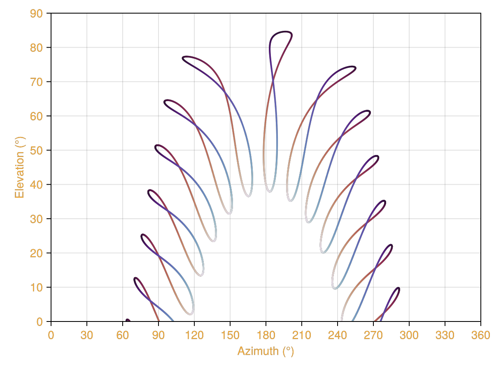
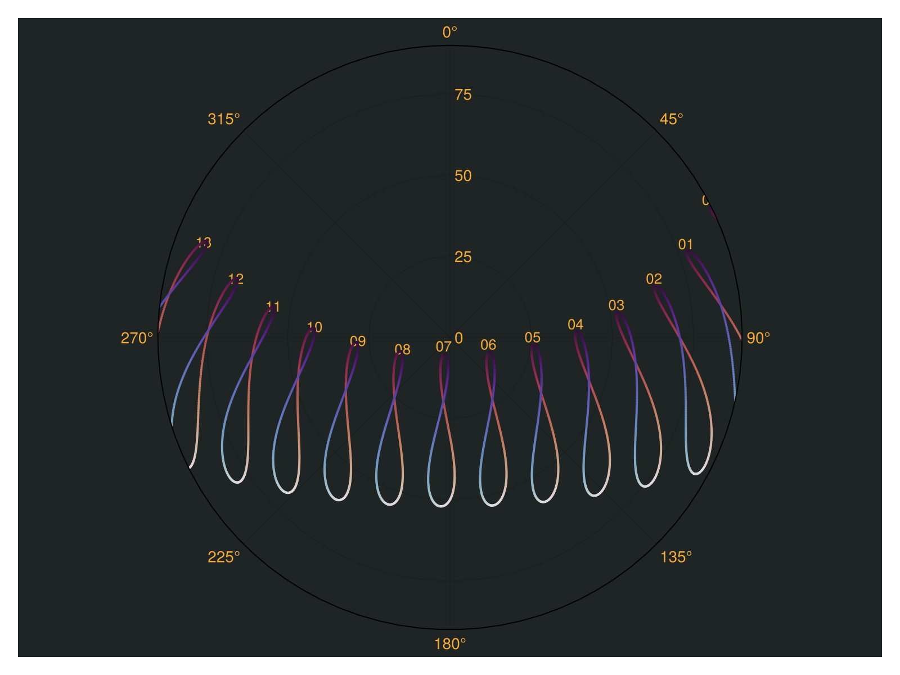
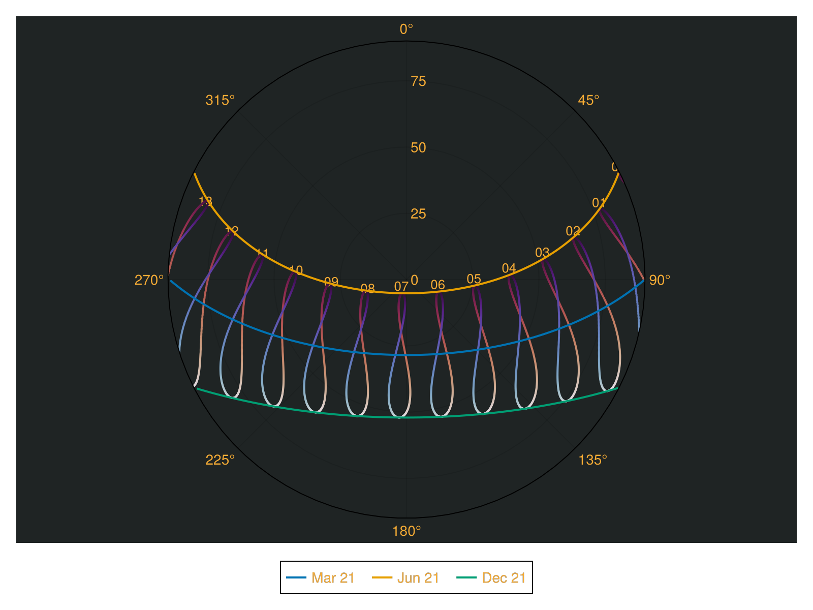
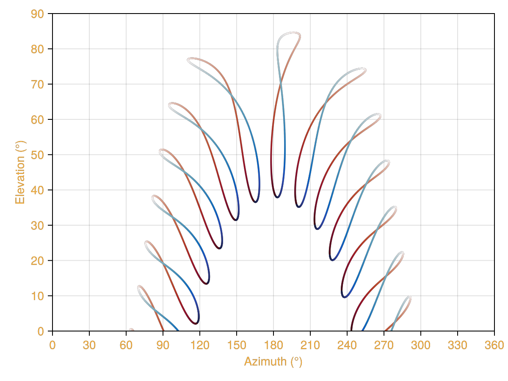

Plotting with Makie.jl
SolarPosition.jl provides a plotting extension for Makie.jl.
The main plotting function is analemmas!.
To use it, simply import both the SolarPosition and Makie packages:
using SolarPositionusing CairoMakie# supporting packagesusing Datesusing TimeZonesThis example notebook is based on the pvlib sun path example.
Basic Sun Path Plotting
The plotting functions generate analemmas (figure-8 patterns showing the sun's position at each hour of the day throughout the year). You simply provide an observer location and the year you want to visualize:
# Define observer location (New Delhi, India)# Parameters: latitude, longitude, altitude in metersobs = Observer(28.6, 77.2, 0.0)tz = TimeZone("Asia/Kolkata")year = 20192019Simple Sun Path Plot in Cartesian Coordinates
We can visualize solar positions in cartesian coordinates using the analemmas! function. The function automatically generates analemmas for all 24 hours of the day:
fig = Figure(backgroundcolor = (:white, 0.0), textcolor= "#f5ab35")ax = Axis(fig[1, 1], backgroundcolor = (:white, 0.0))analemmas!(ax, obs, year, hour_labels = false)fig
Polar Coordinates with Hour Labels
Plotting in polar coordinates with analemmas! may yield a more intuitive representation of the solar path. Here, we enable hourly labels for better readability:
fig2 = Figure(backgroundcolor = :transparent, textcolor= "#f5ab35", size = (800, 600))ax2 = PolarAxis(fig2[1, 1], backgroundcolor = "#1f2424")analemmas!(ax2, obs, year, hour_labels = true)fig2
Now let's manually plot the full solar path for specific dates March 21, June 21, and December 21. Also known as the vernal equinox, summer solstice, and winter solstice, respectively:
line_objects = []for (date, label) in [(Date("2019-03-21"), "Mar 21"), (Date("2019-06-21"), "Jun 21"), (Date("2019-12-21"), "Dec 21")] times = collect(ZonedDateTime(DateTime(date), tz):Minute(5):ZonedDateTime(DateTime(date) + Day(1), tz)) solpos = solar_position(obs, times) above_horizon = solpos.elevation .> 0 day_filtered = solpos[above_horizon] line_obj = lines!(ax2, deg2rad.(day_filtered.azimuth), day_filtered.zenith, linewidth = 2, label = label) push!(line_objects, line_obj)end# Add legend below the plotfig2[2, 1] = Legend(fig2, line_objects, ["Mar 21", "Jun 21", "Dec 21"], orientation = :horizontal, tellheight = true, backgroundcolor = :transparent)fig2
The figure-8 patterns are known as analemmas, which represent the sun's position at the same time of day throughout the year.
Note that in polar coordinates, the radial distance from the center represents the zenith angle (90° - elevation). Thus, points closer to the center indicate higher elevations. Conversely, a zenith angle of more than 90° (negative elevation) indicates that the sun is below the horizon. Tracing a path from right to left corresponds to the sun's movement from east to west.
It tells us when the sun rises, reaches its highest point, and sets. And hence also the length of the day. From the figure we can also read that in June the days are longest, while in December they are shortest.
Custom Color Schemes
You can customize the color scheme used for the analemmas by passing a colorscheme argument. Here's an example using the :balance colorscheme.
More colorschemes are available in the Makie documentation.
fig = Figure(backgroundcolor = (:white, 0.0), textcolor= "#f5ab35")ax = Axis(fig[1, 1], backgroundcolor = (:white, 0.0))analemmas!(ax, obs, year, hour_labels = false, colorscheme = :balance)fig
Docstrings
SolarPosition.analemmas! — Function
analemmas!Plot analemmas (figure-8 patterns showing the sun's position at each hour throughout the year) for a given observer location and year.
Arguments
ax: A MakieAxisorPolarAxisto plot onobserver::Observer:Observerlocation (latitude, longitude, altitude)year::Int: Year for which to generate the analemmashour_labels::Bool=true: Whether to add hour labels to the plotcolorscheme::Symbol=:twilight: Color scheme for the analemma points (any Makie colormap)
Description
This function automatically generates solar position data for all 24 hours of each day throughout the specified year and plots them as analemmas. The plot specializes to either PolarAxis or regular Axis and adjusts the plot accordingly:
PolarAxis: Plots in polar coordinates with azimuth as the angle and zenith as the radiusAxis: Plots in cartesian coordinates with azimuth on the x-axis and elevation on the y-axis
The analemmas are colored by day of year. The default colorscheme is :twilight, but this can be customized using the colorscheme keyword argument.
Examples
using SolarPositionusing CairoMakie# Define observer location (New Delhi, India)obs = Observer(28.6, 77.2, 0.0)year = 2019# Plot in cartesian coordinatesfig = Figure()ax = Axis(fig[1, 1], title="Sun Path - Cartesian")analemmas!(ax, obs, year)fig# Plot in polar coordinatesfig2 = Figure()ax2 = PolarAxis(fig2[1, 1], title="Sun Path - Polar")analemmas!(ax2, obs, year, hour_labels=true)fig2# Use a custom colorschemefig3 = Figure()ax3 = Axis(fig3[1, 1], title="Sun Path - Custom Colors")analemmas!(ax3, obs, year, colorscheme=:viridis)fig3See also: Observer, solar_position